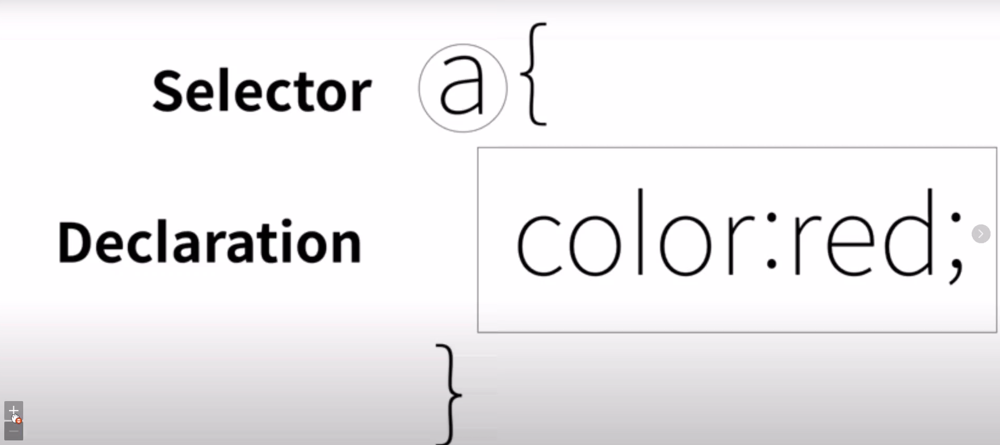

오리엔테이션
1. 수업 소개
2. CSS 등장 이전의 상황
두 가지 갈림길 - 쉽지만 한계가 있는 방법 / 어렵지만 근본적인 해결책
html에 디자인과 관련된 새로운 태그를 만드는 것 / 디자인에 최적화된 새로운 언어를 만드는 것
초반에는 새로운 태그를 만드는 것을 선택 -> 한계를 느껴 새로운 언어 개발 => CSS
<font>: 더 이상은 거의 쓰이지 않는 디자인과 관련된 새로운 태그
h 태그와 a 태그는 font 태그와는 다르다.
h 태그와 a 태그 등 기존의 html 태그는 해당 내용의 정보를 나타내는 것.
그러나 font 태그는 정보가 아니라 디자인의 의미만 담긴 것.
html 태그의 본질이 흐트러지는 문제 등이 발생
CSS의 등장
3. CSS의 등장
웹 브라우저는 기본적으로 태그를 html 언어로 인식
css는 html 코드와는 완전 다른 언어
웹 브라우저에게 이것은 css 문법으로 해석해달라고 html 언어로 알려줘야 함
=> <style></style> (head 태그 안에서 쓰여야 함)
CSS를 사용하면 폭발적인 효과가 있기 때문
a 태그의 색상을 일괄적으로 바꾸는데 a 태그가 1억 개가 있다면 font 태그의 경우 1억 개를 다 바꾸어야 하지만, CSS의 경우에는 하나만 바꾸면 1억 개가 일괄적으로 바뀐다.
그리고 CSS의 효과는 웹 페이지의 규모가 커질 수록 효과가 커진다.
유지 보수에도 효과적이고 가독성에도 도움이 되고, html의 문서의 정보를 담는 기능에 충실할 수 있다.
1. html의 정보 전념에 도움 2. css 언어가 html의 font 태그보다 효율적
4. CSS의 기본 문법
스타일 태그 이용 => <style></style>
a {
color: black;
} => 선택자 (selector)
a {
color: black;
} => 선언(declaratiion)
스타일 속성을 이용=> style="color:orange"
HTML과 CSS의 사용 설명서를 보면 style이라는 속성을 쓰면 웹 브라우저는 그 속성의 값을 CSS의 문법에 따라 쓰기로 약속되어 있음
style="color:orange" => html 태그
style="color:orange" => CSS의 효과가 들어온다.
text-decoration => 글자 꾸밈
text-decoration: none => 글자 꾸밈 제거, 밑줄 제거
text-decoration: underline => 밑줄 생성
5. 혁명적 변화

property: 속성
6. CSS 속성을 스스로 알아내기
h1 태그 안에 속해 있는 텍스트를 더 크게 그리고 가운데 정렬로 맞추고 싶다.
폰트 크기 조절 추천 검색어 => CSS text size property => font-size
가운데 정렬 추천 검색어 => CSS text center property => text-align
절대 이 모든 property를 외울 필요가 없다. 충분히 검색으로 알아낼 수 있다. 다만 알아내는 방법만 익하면 된다.
뇌를 이기는 사람은 없다. 이 모든 property를 외우려고 하는 순간 뇌는 혹사당하게 되고, 혹사 당한 뇌는 그 원인을 최대한 피하려고 들 것이다.
7. CSS 선택자의 기본
모든 링크는 기본적으로 검은색, 방문한 적이 있는 링크는 회색, 현재 방문하고 있는 링크는 보라색
class="saw active" => 스타일을 넣고 싶은 해당 태그에 class라는 속성을 추가
.active {
color: purple;
}
style 태그 쪽에서 selector 앞에 .를 붙이면 class 속성을 의미하는 selector가 된다.
class 속성 안에는 여러 개의 값이 들어갈 수 있고, 띄어쓰기로 구분
하나의 태그에는 여러 개의 속성이 들어올 수 있고 여러 개의 선택자를 통해서 하나의 태그를 공동으로 제어 가능
그러나 이것은 좋은 방법이 아니다
보다 가까이에 있는 명령이 더 큰 영향력을 갖는다
id 선택자 => #
id selector > class selector > tag(=element) selector
왜? => id의 값은 중복이 불가능. 예를 들어 어떤 태그에서 id="active"가 쓰였다면 active는 더 이상 id의 값으로 쓰일 수 없음
뭐가 더 포괄적이고 구체적인가에 따라 우선 순위가 나뉨. 구체적일수록 우선 순위가 높아짐.
태그로 전반적인 디자인을 잡고 id로 예외 사항을 두는 것이 디자인하기에 더 효율적이기 때문.
검색=> CSS Selector Reference
박스 모델
8. 박스 모델
9. 박스 모델 써먹기
그리드
10. 그리드 소개
grid는 아주 최신 기술. 최신 기술을 도입할 때에는 도입 근거 자료를 통계를 통해서 추출
아주 유용하고 중요한 추천 사이트: caniuse.com
11. 그리드 써먹기
#grid ol => grid라는 아이디를 가진 태그 밑의 ol에만 해당되는 selector
미디어 쿼리
12. 미디어 쿼리 소개
반응형 디자인, responsive web: 화면의 크기에 따라 웹 페이지의 각 요소들이 반응해서 최적화된 모양으로 바뀌게 하는 것
13. 미디어쿼리 써먹기
스크린의 폭이 800px 보다 작을 때
14. CSS 코드 재사용
link tag: 이 html 파일이 어떤 css와 연결되어 있는지 웹 브라우저가 알 수 있고, 다운로드받아 적용하게 될 것.
사용성이 높아지게 될 것.
개발자 도구 -> network => 웹 브라우저가 해당 웹 페이지를 불러올 때 웹 서버에서 다운로드받는 파일들 볼 수 있음
cashing => style.css를 파일을 캐싱하게 되면 한 번 다운로드받으면 다음부터 로드된 때는 데이터 사용없이 오프라인으로 로드 가능 => 경제 절약
수업을 마치며
15. 수업을 마치며
많이 배웠는데 써먹지 못하면 뇌는 억울해 한다. 그러면 어떻게든 공부를 하지 않으려 애쓴다.
조금 배웠는데 써먹을 만큼 써먹으면 뇌는 그 효용성에 감탄해 한다.
잠시 멈춰서서 본인이 배운 것을 자신만의 홈페이지를 만들어 보며 써먹어볼 것